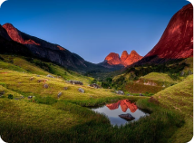

Saibam quais são os países da América do Sul reabertos para brasileiros
Infelizmente a pandemia não acabou, mas algumas cidades no país já retomaram suas atividades
turísticas, o que ocorre também em alguns países vizinhos, sobretudo para os seus próprios cidadãos;
mas como esta a situação para viajantes brasileiros?
Saiba mais...

Seguro Viagem Bolívia: como contratar e outras dicas importantes
De Amazônia, ao maior deserto de sal do mundo, passando por paisagens surreais, além de ricas
cultura e história, a Bolívia
Saiba mais...

Seguro viagem Equador: como contratar e outras dicas importantes
Com o avanço (ainda que menos rápido do todos gostaríamos) da vacinação alguns brasileiros já
voltam ...
Saiba mais...

Chalés em Gramado: 7 sugestões para você curtir o melhor da Serra Gaúcha

10 lugares para viajar no Rio de Janeiro